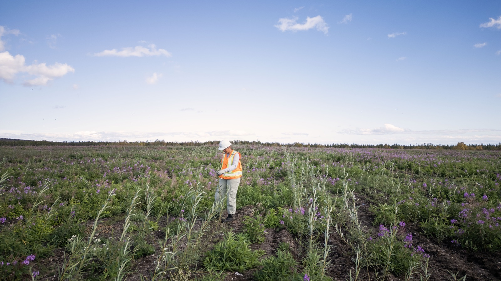
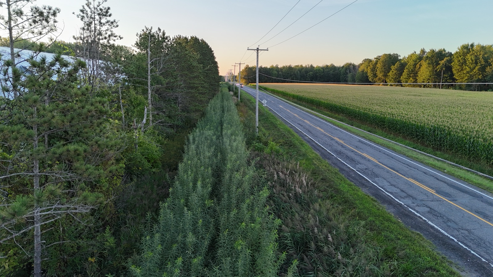
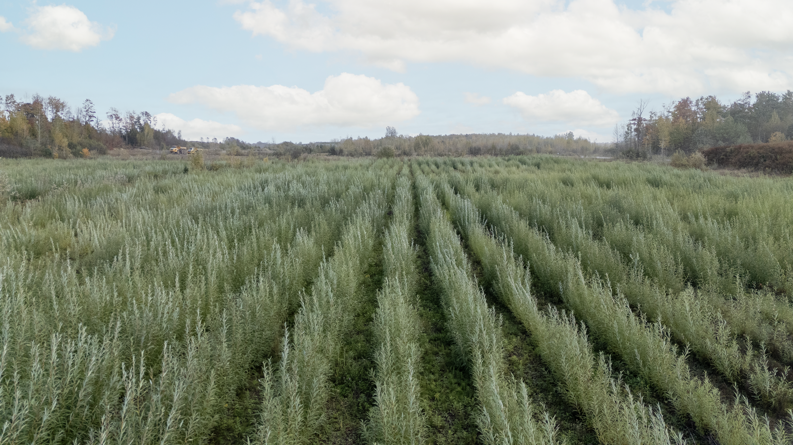
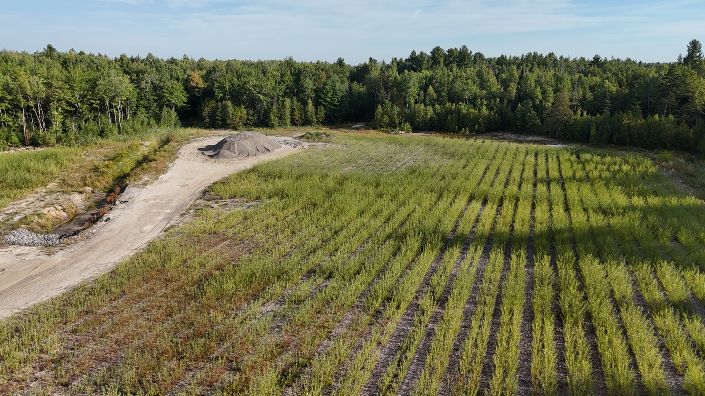
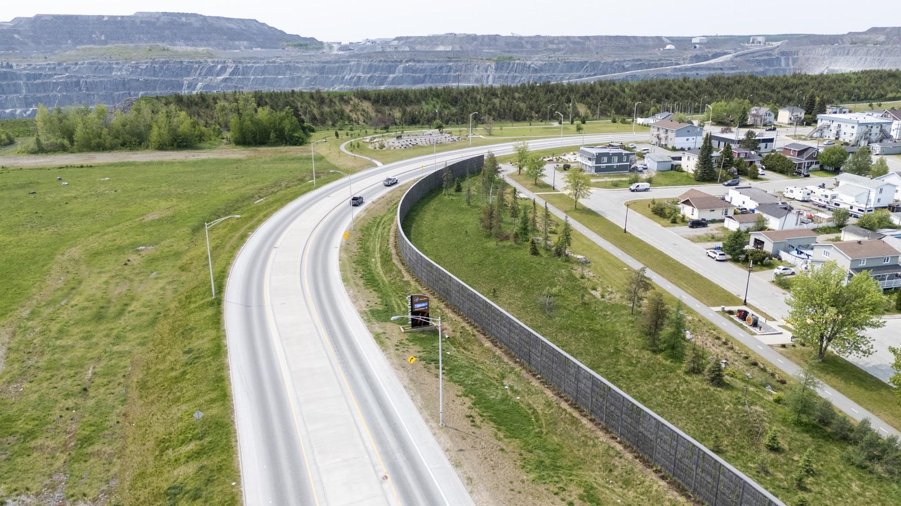
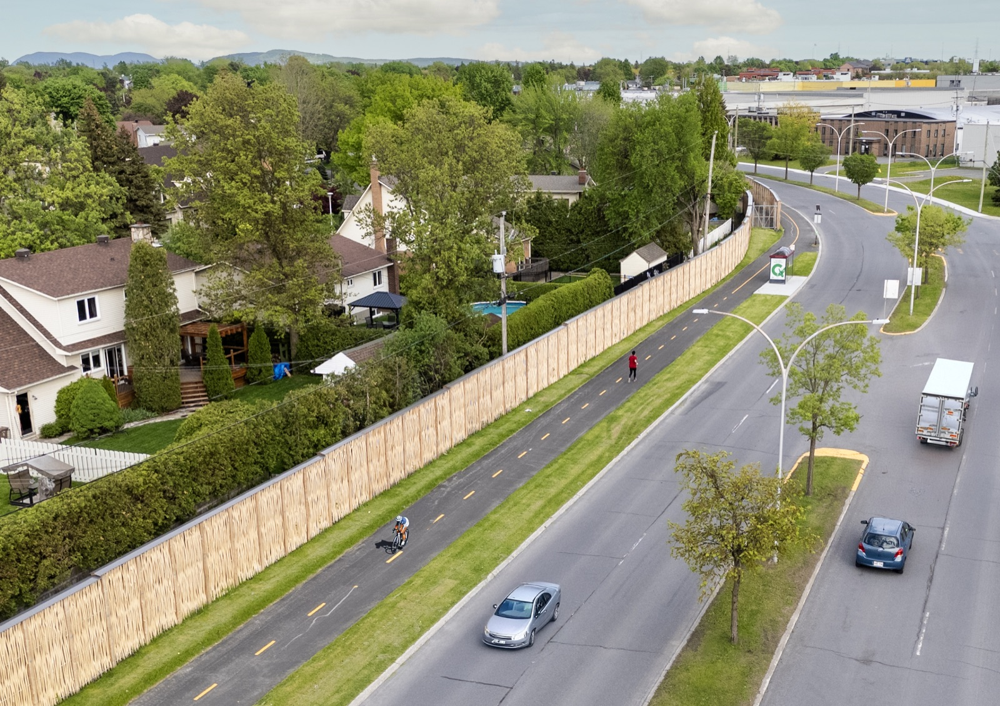
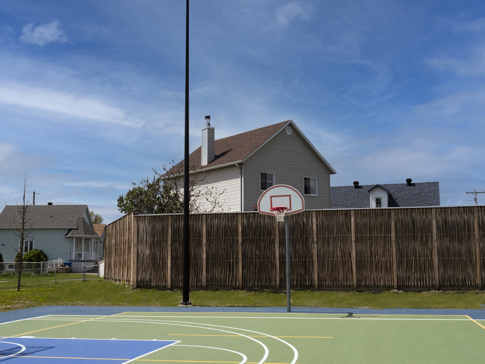
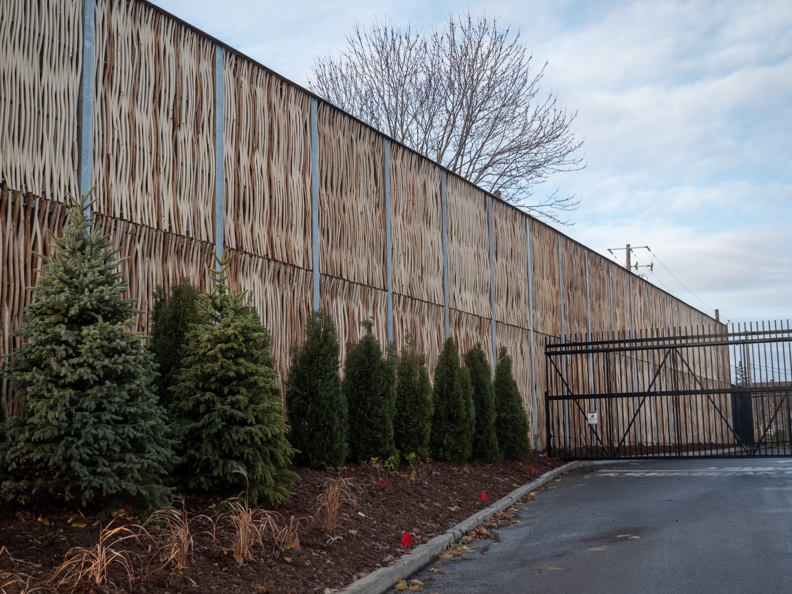
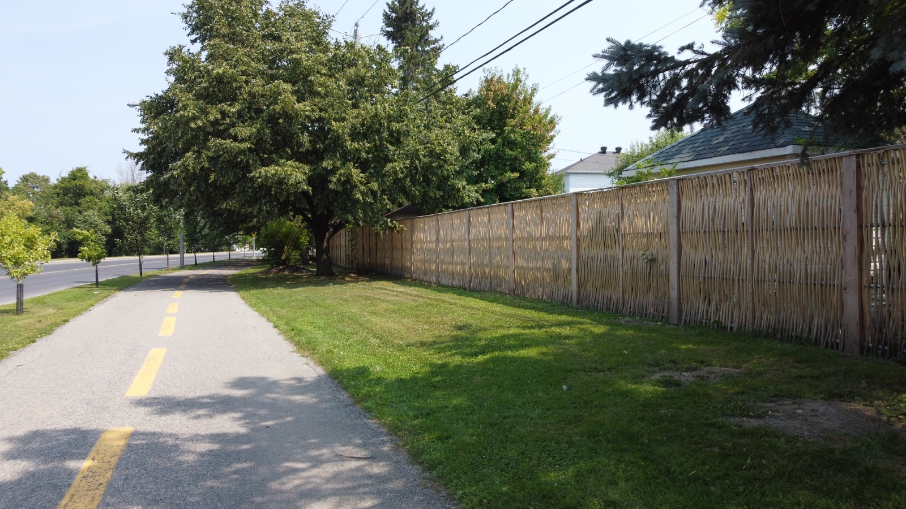

Nos projets
sur le terrain.

Evaplant® — Complexe de Saint-Nicéphore
Gestion intégrée combinant Evaplant® et Evacap™ pour une performance maximale.

Evaplant® — LET de Saint-Lambert-de-Lauzon
1,7 ha Evaplant® sur ancienne cellule : ~5 000 m³ de lixiviat réduits et ~117 t CO₂ éq. captées.

Evaplant® — LET de Sainte-Sophie (WM)
~12,8 ha et ~204 800 saules : jusqu'à ~51 000 m³/an de lixiviat traités et ~242 t CO₂ éq./an captées.

Evacap™ — Ancien LES de Sept-Îles
Couvert Evacap™ sur ~11 ha : 80 à 94 % des précipitations saisonnières évapotranspirées et résurgences de lixiviat fortement réduites.

Barrière végétale — Compo-Haut-Richelieu
Écran visuel de ~400 m par plantation dense de ~16 000 saules pour masquer les opérations depuis la route.

Végétalisation — Mine Mont-Wright (ArcelorMittal)
Essai variétal de 12 300 saules sur 1,7 ha — 16 variétés testées en conditions minières nordiques.

Végétalisation — Sablière Demers
13 ha en végétalisation intensive — jusqu'à 268 800 saules plantés et MRF valorisées sur site, depuis 2017.

Végétalisation — Sablière Sable Villeneuve
~50 ha végétalisés avec 1 000 000 de saules et 5 000 t de MRF — réhabilitation progressive d'une sablière en fin d'exploitation.

Pilebyg — Mine Canadian Malartic
Mur Pilebyg en saules tressés de 350 m × 5 m — atténuation de 5 dBA et 12 433 kg de carbone captés.

Pilebyg — Boulevard Industriel (Boucherville)
Mur Pilebyg de 750 m × 3 m — réduction sonore mesurée de 11 dBA (69 → 58 dBA).

Pilebyg — Parc des Riverains (Lavaltrie)
Mur antibruit végétal de 35 m × ≥ 3 m — réduction simulée de 5 à 15 dBA (étude Vinacoustik).

Pilebyg — Costco Wholesale (Saint-Hubert)
Mur Pilebyg de 51 m × 5,5 m — atténuation ≥ 20 dBA, critère municipal de 53 dBA (Ville de Longueuil).

Pilebyg Classic — Super C (Sherbrooke)
Mur Pilebyg Classic de 68 m × 3,5 m — critère réglementaire de 45 dBA atteint en zone résidentielle adjacente.

Clôture en saule tressé — piste cyclable (Saint-Constant)
~800 m de clôtures en saule tressé entre résidences et piste cyclable — délimitation, intimité et intégration paysagère.
Un projet en tête ?
Discutons-en.
Notre équipe est disponible pour discuter de vos besoins et vous proposer la solution adaptée.